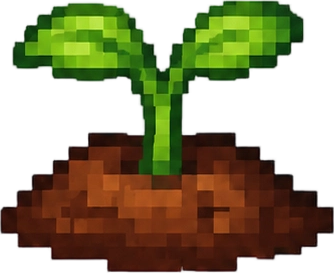
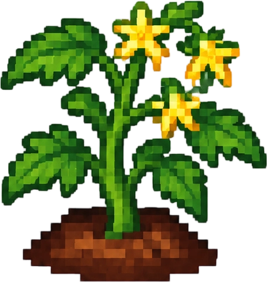
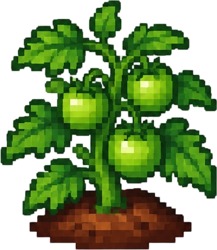
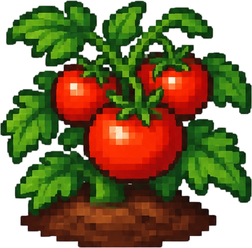

所有阶段
从整地到不同作物的生长阶段展示。
翻土、播种、浇水、施肥，作物会随时间生长；收获后可以直接拿去厨房。

以西红柿为例，四个阶段的形态变化。

阶段 1
阶段 2
阶段 3
阶段 4 · 成熟翻土、播种、浇水、施肥到成熟收获。
从整地到不同作物的生长阶段展示。
只浇水不施肥，收 1–5 个。
每阶段施肥再浇满水，收 3–10 个。
每个生长阶段要浇 3 次水。浇水时这一格如果施过肥，这一次就算“带肥”；肥效只管当前阶段，进入下一阶段要重新施。
每个阶段都不施肥，一轮要 8 天。多产作物收获 1–5 个，权重压在 1–2 个上；卷心菜、南瓜这类固定只收 1 个。
每个阶段先施肥、再浇满 3 次水，一轮 4 天。多产作物收获 3–10 个，大多数落在 5–6 个；固定单产作物只是成熟更快。
多产作物只有西红柿、草莓、西葫芦、哈密瓜、黄星果。成熟后 3 天不采会烂掉并掉落腐烂果实；连续 2 天不浇水会枯死，这一季就白种了。
长时间不浇水，作物会进入枯死状态，这一季就白种了。
农业不是单独的“收菜玩法”，它更像小镇的底层循环：种出来的菜可以卖，也可以直接拿进厨房。
完整的一轮是：翻土、播种、浇水、施肥，等作物进入下一阶段，成熟后收获。水肥都要玩家自己来，缺水会有提示；长时间不管，作物会枯死，这一季就要重新播种。
作物按四个阶段生长，部分作物可以多次收获。种什么、什么时候种，会变成一个小规划，而不是到点自动收菜。
收获之后进背包，接上烹饪和 NPC 口味。这条链让种田不是孤立的系统，而是经济和日常的一部分。
后续也可以继续加作物、季节和更多加工方式，这块留了扩展空间。